Este paquete reúne, para cada piloto, los componentes descriptivos y testimoniales definidos en la guía Estructura del Paquete Comunicacional WP3: una ficha de síntesis (300–500 palabras) que responde a cuatro preguntas orientadoras —contexto y propósito, metodología de co-diseño, impacto y aprendizajes, y sostenibilidad futura— y una selección de testimonios (quotes) extraídos de las entrevistas y mentorías.
Los textos y citas se sintetizaron a partir de las fuentes del proyecto en Google Drive: propuestas y documentos de solución, reportes de mentoría, transcripciones de entrevistas y casos de estudio. Las citas son textuales de sus fuentes; cuando un dato no consta en Drive, se marca como pendiente.
Según la guía, todo rostro o nombre identificable requiere un Consentimiento para el Uso de Imagen firmado, y cada piloto debe sumar 10–15 fotografías de alta calidad. El estado de fotos y consentimientos por piloto se resume al final de este documento; varios están aún pendientes y deben completarse antes de publicar material visual identificable.
Cada piloto incluye su ficha de síntesis, el resumen de las cuatro preguntas orientadoras, sus testimonios y el estado de respaldos visuales y consentimientos.
El Mes Azul IDMA es el piloto del Blue Economy Lab (WP3, Erasmus+ N.º 101183250) que IDMA implementará anualmente en Chile como espacio de encuentro de la economía azul. Su propósito es doble: vincular a la academia con las empresas y el sector productivo marino-costero, y posicionar a los centros de formación técnica como referentes nacionales en economía azul.
Contexto y propósito. El piloto parte de una hipótesis validada en la Mentoría 1: existe una falta de vinculación entre academia, empresa y sector productivo de la economía azul. Para el técnico profesional joven —el arquetipo "Pedro", de 20 a 30 años— esa desconexión se traduce en inestabilidad laboral, ausencia de redes locales y poca valoración de su formación en un mundo donde se trabaja "por oficio y tradición". El programa busca cerrar esa brecha.
Metodología de co-diseño. La propuesta se construyó con la metodología MicroVET de la Unión Europea a lo largo de un ciclo de mentorías, llenando canvas en vivo con el equipo IDMA (Paola Cerda, rectora; Víctor Bravo y Javiera Núñez, docentes) y con voces expertas: Jessica Morales (Uniminuto, Colombia) aportó el modelo multimodal, las tarifas diferenciadas por territorio y la línea de becas con consejo de empresarios; Sebastián Gallardo (U. de Antofagasta) aportó el diseño de ferias, actores a convocar, costos y auspicios. El diseño se testeó con el sector mediante la entrevista a Aldo Poblete, biólogo marino con trayectoria en consultoría, el IFOP y la salmonera Ventisqueros.
Impacto y aprendizajes. El testeo con el sector validó la brecha y la dotó de contenido: la economía azul se ancla en la economía circular (caso Caleta Chungo, de lo extractivo al turismo; valorización de residuos pesqueros) y revela dos demandas formativas concretas, el "criterio operativo ante la crisis" y un "lenguaje común" entre perfiles teóricos y empíricos, con la alfabetización tecnológica como punto de encuentro. El equipo definió la estructura del programa: un ciclo de seis charlas tipo TED durante el mes y una jornada de cierre con feria, seminario y talleres en CTS Buin, con la premisa de que toda oferta presencial tenga su versión online para llegar a todo Chile. El tangible para el participante es un curso con certificación OTEC IDMA.
Sostenibilidad futura. El Mes Azul queda planteado como hito anual con KPIs de continuidad (alcance online, empresas y stands, vinculaciones estudiante-empresa, becas y auspicios comprometidos), articulado con el piloto Guardianes del Agua y con potenciales convenios (U. de Antofagasta, cooperación Chile-Colombia con Uniminuto, IFOP), de modo que el hito se sostenga más allá del proyecto.
| Contexto y propósito | El piloto responde a una hipótesis validada con el sector: la falta de vinculación entre academia, empresa y sector productivo de la economía azul, que deja al técnico profesional joven (arquetipo "Pedro") con inestabilidad laboral, sin redes locales y con escaso reconocimiento de su formación. |
|---|---|
| Metodología de co-diseño | Se co-diseñó con la metodología MicroVET (UE), llenando canvas en vivo durante un ciclo de mentorías con el equipo IDMA (Paola Cerda, Víctor Bravo, Javiera Núñez), voces expertas (Jessica Morales/Uniminuto y Sebastián Gallardo/U. de Antofagasta) y un testeo con el sector productivo mediante la entrevista a Aldo Poblete. |
| Impacto y aprendizajes | El testeo confirmó la brecha academia-sector y aportó contenido formativo concreto ("criterio operativo ante la crisis", "lenguaje común" y alfabetización tecnológica); el equipo dejó definida la estructura del programa (seis charlas TED, jornada de cierre con feria en CTS Buin, doble canal presencial/online y curso con certificación OTEC IDMA). |
| Sostenibilidad futura | Queda instalado un hito anual con KPIs de continuidad (alcance online, empresas/stands, vinculaciones estudiante-empresa, becas y auspicios), articulado con Guardianes del Agua y con convenios potenciales (U. de Antofagasta, cooperación Chile-Colombia con Uniminuto, IFOP) que proyectan el programa más allá del proyecto. |
“El sector industrial... una de las cosas que necesita mucho la industria, principalmente la industria pesquera o la industria salmonera, es... dejar de ver... los peces como un producto y más como un organismo.”
“Tenemos gente que tiene una excelente teoría... pero no sabe cómo aplicarlo, por ejemplo, en una empresa. Y por otro lado... tenemos gente que tiene mucha experiencia empírica... pero le falta mejorar la forma de comunicarse o expresar su idea. El mayor desafío es llegar a un lenguaje común.”
“IDMA podría entrar muy bien ahí diciendo: 'Oye, nosotros podemos formar a tus observadores científicos', enseñándole cómo se comportan los océanos, las corrientes, los organismos. Hay un abanico super grande que podría explotarse.”
“En el contexto del trabajo informal no hay valoración por la formación técnica o universitaria para el trabajo azul... lo que se ve en terreno es que la gente trabaja por oficio, por el aprendizaje de oficio y por tradición, y no necesariamente por formación técnico-profesional.”
“La feria presencial en terreno es lo más importante y la parte digital es un insumo, porque parte de la gracia de la feria es que vayan personas vinculadas a distintos sectores y, al estar juntos, se crean conversaciones y se conocen.”
Fotos: Disponible 15 capturas incluidas (ver galería).
Consentimientos de imagen: Parcial parcial — La metodología de entrevistas exige explícitamente "solicitar consentimiento de grabación y registro fotográfico de evidencia" y se registró asistencia formal y fotos en las sesiones. No se localizó en los documentos leídos un formulario de consentimiento firmado por persona para uso público de imagen; se recomienda confirmar/recopilar consentimientos individuales antes de publicar fotos identificables.
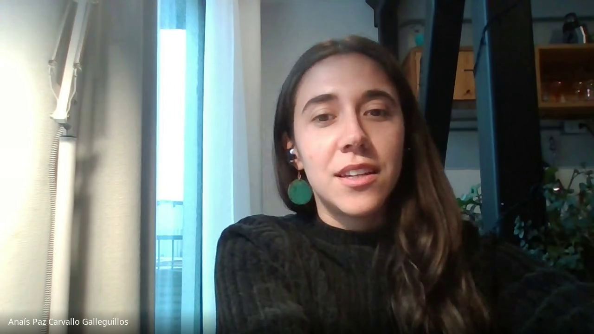
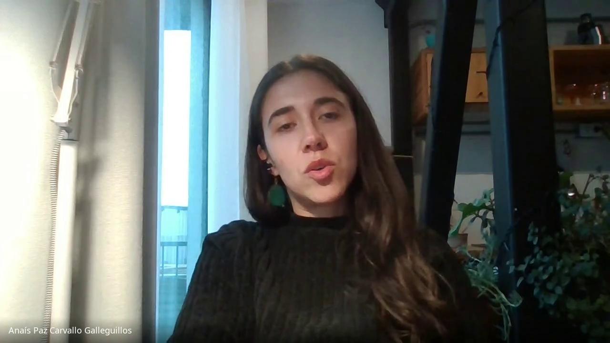
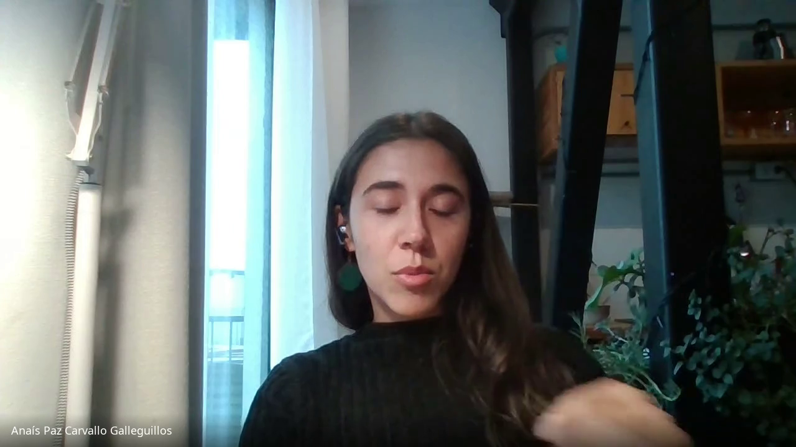
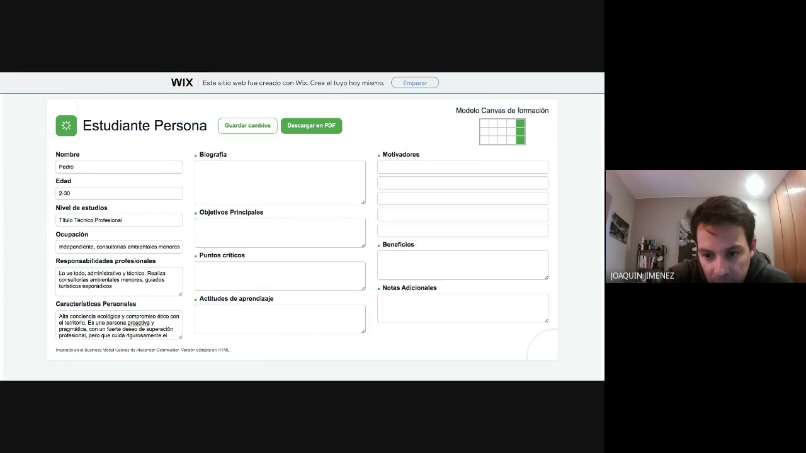
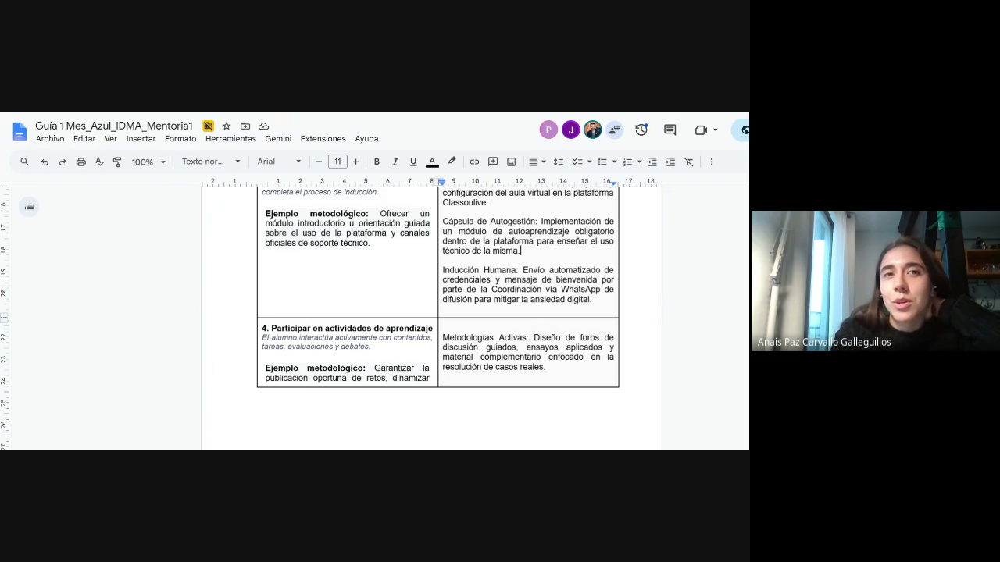
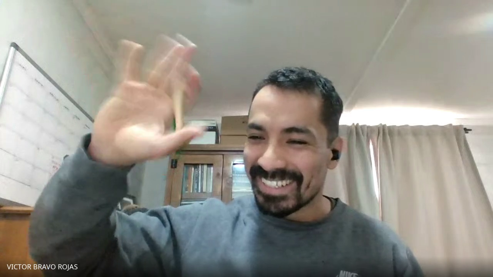
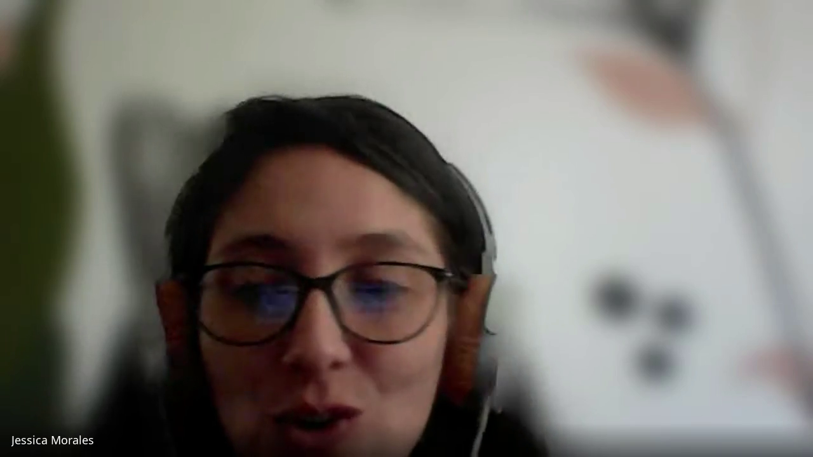
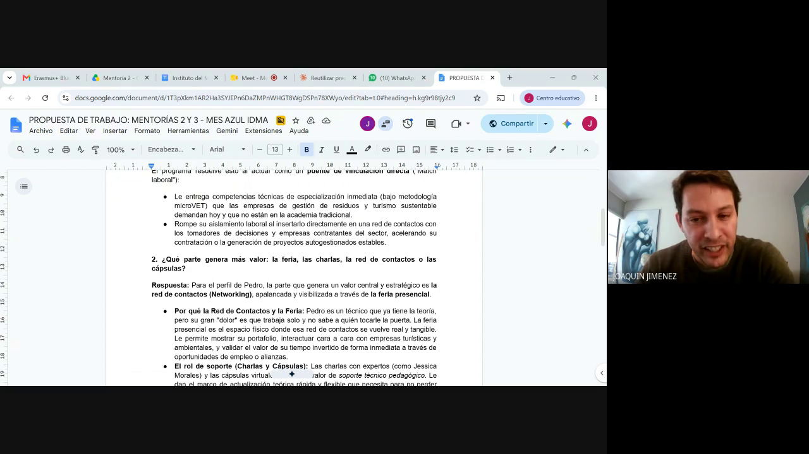
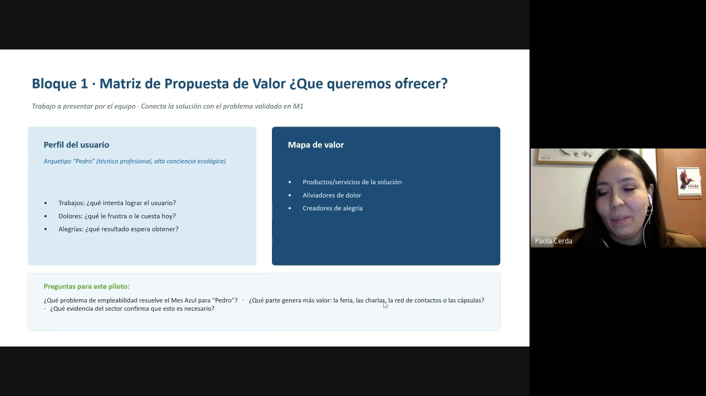
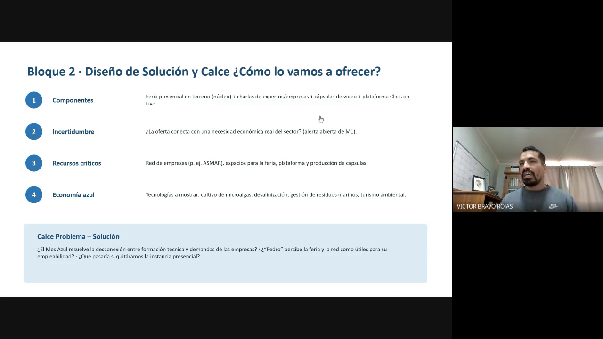
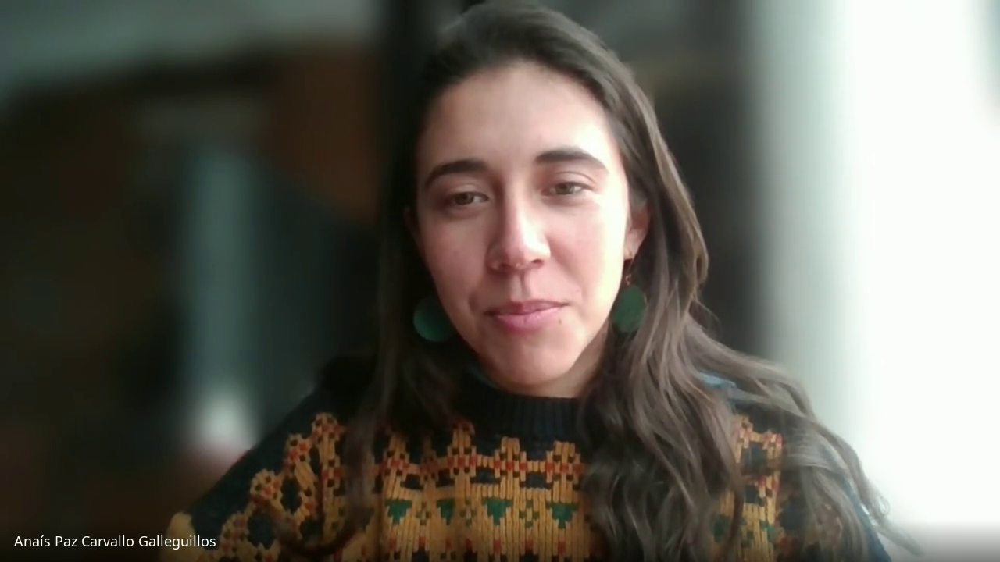
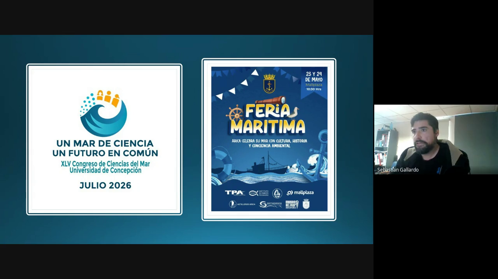
15 fotogramas extraídos de las grabaciones de mentoría (5 por sesión, en distintos momentos).
El Diplomado en Economía Azul y Sostenibilidad Costera es un piloto del Blue Economy Lab (proyecto Erasmus+ N.º 101183250) ejecutado por IDMA en Chile, a través de su Academia de Medioambiente (AMA). Responde a una necesidad concreta: Chile tiene cerca de 4.000 km de costa y sectores productivos (pesca, salmonicultura, turismo costero) que demandan capital humano especializado, pero no existe una oferta formativa pertinente que conecte la academia con el mercado laboral costero.
Su sello es el enfoque "oportunidad + conservación": demostrar que se puede generar valor en el territorio sin destruirlo, superando el paradigma de la conservación intocable.
El diseño se construyó con una metodología de co-diseño en mentorías sucesivas (MicroVET). En la Mentoría 2, el director de Educación Continua de AMA, Sebastián Cerda, aportó la modalidad 100% online con instancia presencial opcional y la plantilla estandarizada de AMA; el equipo del piloto (Juan Otero, Estefanía Campos) trabajó la estructura curricular y las microcredenciales. En la Mentoría 3 (testeo), la voz experta del biólogo marino Aldo Poblete, junto a Estefanía Campos y Juan Otero, validó el enfoque profesionalizante.
El programa quedó en 120 horas: cuatro cursos de 30 horas (economía azul y sistemas marino-costeros; gestión de recursos y residuos marinos; innovación, emprendimiento y tecnologías marinas; y normativa e institucionalidad). Cada curso combina teoría y práctica (~60/40) y entrega una microcredencial específica que agrega valor al CV (por ejemplo, monitoreo con GIS, ISO 14001, formulación de proyectos o valorización de residuos de la acuicultura).
Entre los aprendizajes del testeo: el diplomado debe unir dos "polos" (quienes tienen conocimiento científico pero no saben ejecutarlo, y quienes tienen saber empírico pero no logran formalizarlo) mediante un lenguaje común y alfabetización tecnológica. Se incorporó un nuevo eje de gobernanza y permisología (SEA/SEIA, Subpesca, Sernapesca, IFOP, Directemar, Servicio de Biodiversidad, planes PRAMA) y la idea de evaluar el "criterio operativo ante la crisis" con estudios de casos reales.
La sostenibilidad futura se apoya en que la OTEC de AMA ya está inscrita para franquicia tributaria SENCE, en alianzas con instituciones del sector (Subpesca, Sernapesca, IFOP, gremios de pescadores y recolectores, ECIM-PUC) y en un sistema de microcredenciales que articula a estudiantes pasados, actuales y futuros. Los pasos pendientes son la revisión técnica curricular, la presentación a la coordinación académica de IDMA y rectoría, y definir el timing de lanzamiento; el nudo crítico señalado es el financiamiento de los equipos humanos.
| Contexto y propósito | El piloto aborda la ausencia, en Chile, de una formación pertinente en economía azul que dialogue con el mercado laboral costero, en un país con cerca de 4.000 km de costa y sectores (pesca, salmonicultura, turismo costero) que demandan capital humano especializado. Su propósito es mejorar la empleabilidad bajo un enfoque de "oportunidad + conservación". |
|---|---|
| Metodología de co-diseño | Se co-diseñó con la metodología MicroVET en mentorías sucesivas: en la Mentoría 2 participó como voz experta Sebastián Cerda (director de Educación Continua de AMA), aportando modalidad y plantilla institucional, mientras el equipo del piloto (Juan Otero, Estefanía Campos) trabajaba estructura y microcredenciales; en la Mentoría 3 (testeo) el mentor experto Aldo Poblete validó el enfoque profesionalizante junto al equipo, ajustando la malla en diálogo directo. |
| Impacto y aprendizajes | Se llegó a una propuesta formalizada de 120 horas (4 cursos de 30 h, ~60/40 teórico-práctico) con microcredencial por curso, y se incorporaron aprendizajes clave del testeo: unir el saber científico y el empírico mediante alfabetización tecnológica, un nuevo eje de gobernanza y permisología, y la evaluación del "criterio operativo ante la crisis" con casos reales. |
| Sostenibilidad futura | Queda instalada en el territorio una propuesta lista para revisión técnica curricular e implementación, apalancada en la OTEC de AMA (ya inscrita en franquicia SENCE), alianzas con el sector (Subpesca, Sernapesca, IFOP, gremios de pescadores y recolectores, ECIM-PUC) y un sistema de microcredenciales que articula a estudiantes pasados, actuales y futuros; el nudo crítico pendiente es el financiamiento de los equipos humanos. |
“Tenemos un grupo que es super importante, perdón, que es aquellos que tienen mucho conocimiento científico y técnico, pero cuando llegan a una empresa no saben cómo ejecutar ese conocimiento que tienen. Y por otro lado tenemos aquellas personas que tienen mucho conocimiento empírico... pero también tienen dificultades para poder expresar ideas o concretarlas propiamente tal.”
“Hoy no deberíamos quedarnos principalmente en la teoría del cambio climático porque... eso ya todos lo conocen. Lo que necesitamos hoy en día es una adaptación práctica.”
“Aquí hay un valor super importante que tiene que ver con el criterio operativo ante la crisis... una de las soluciones que yo he encontrado es haciendo estudio de casos reales, ni siquiera hipotéticos, casos reales, y ver la capacidad analítica y de respuesta que pueda desarrollar un estudiante.”
“Cuatro cursos, cuatro certificaciones. Eso vende, es atractivo, y uso el concepto de vende, de atractivo para estudiar, fuera del concepto de negocio económico.”
“Quizás lo que tendríamos que hacer es subdividir eso en un 70/30 o en un 60/40 respecto de lo técnico... como en este encuentro de los dos mundos.”
Fotos: Disponible 14 capturas incluidas (ver galería).
Consentimientos de imagen: Pendiente pendiente — No se encontró en el Drive ningún consentimiento, autorización de uso de imagen ni registro de cesión asociado a este piloto.
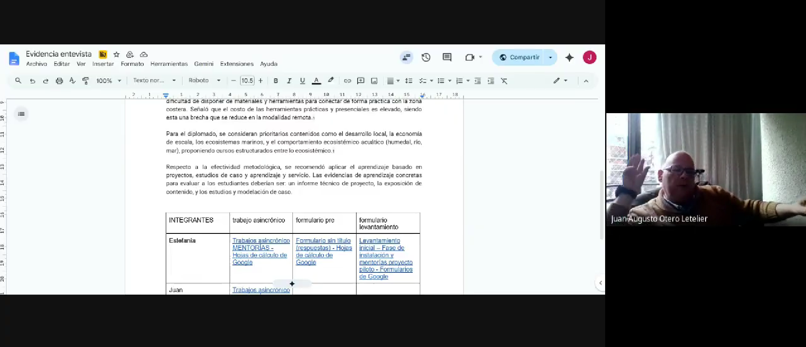
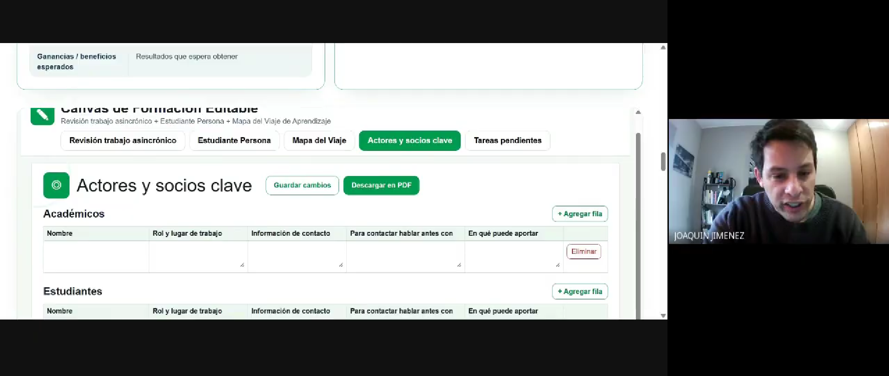
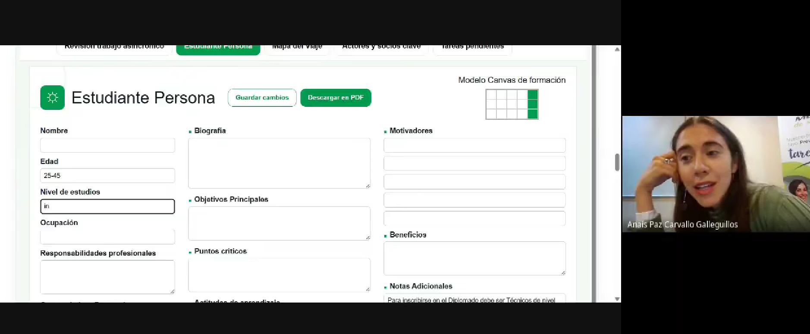
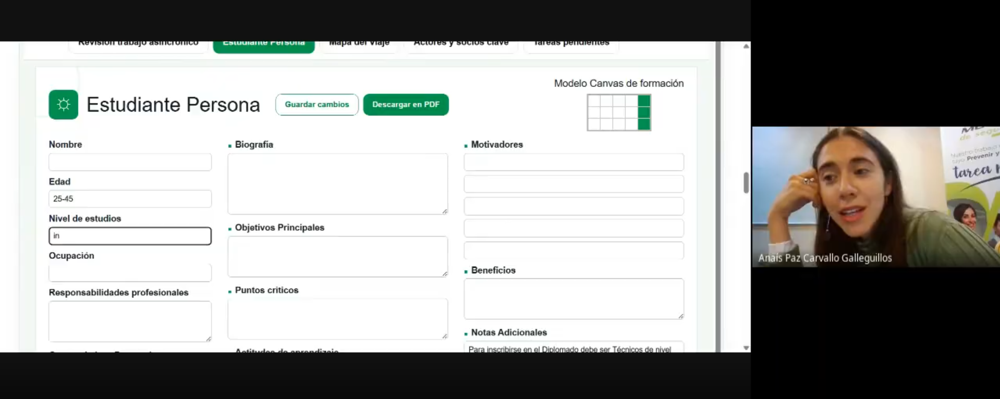
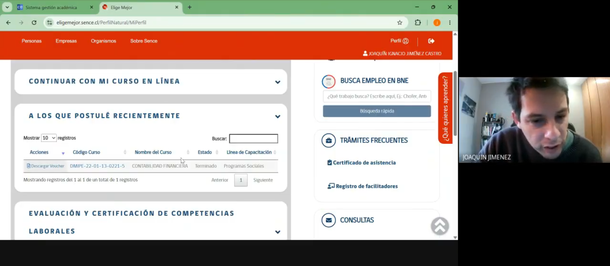
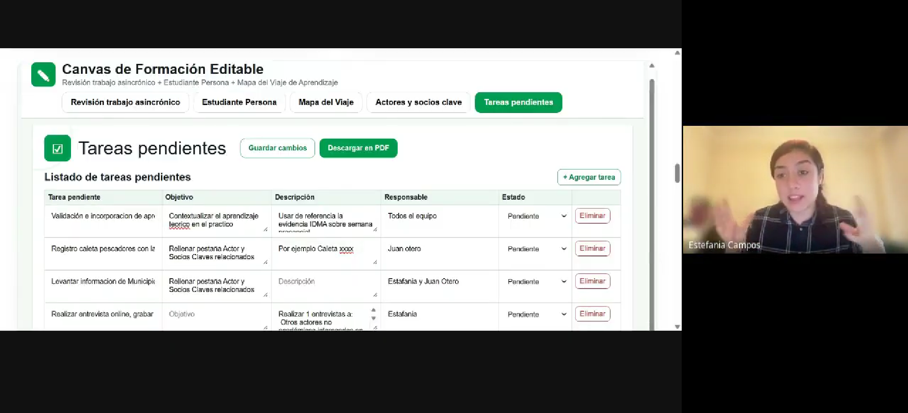
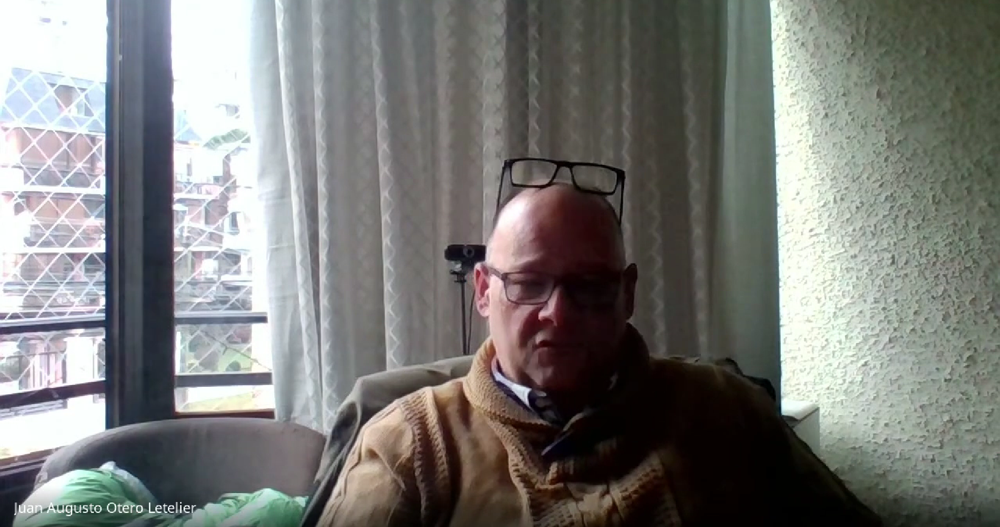
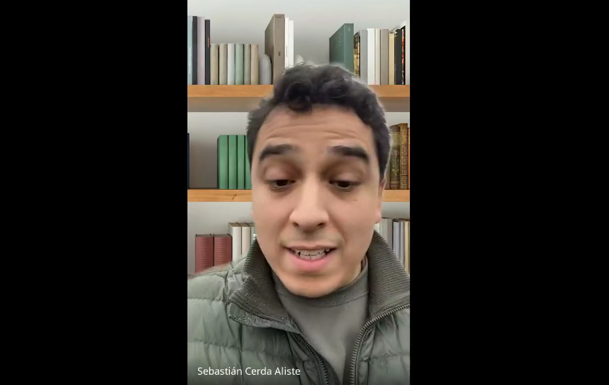
14 capturas del paquete comunicacional (carpeta «FOTOS MENTORÍA 1 DIPLOMADO»).
Guardianes del Agua es el piloto escolar del Blue Economy Lab (WP3), proyecto Erasmus+ ejecutado por IDMA en Chile. Nace de una realidad de la costa norte: muchas comunidades escolares conviven a diario con problemáticas hídricas de su territorio —salmuera de la desalación, residuos plásticos, metales pesados, escasez de agua— pero no se sienten parte de ellas. A esa brecha geográfica se suma que la educación ambiental rara vez se integra al aula y que los recursos escolares son limitados. El programa busca cerrar esa distancia llevando la economía azul a la escuela.
La propuesta toma una problemática hídrica real del territorio y logra que los propios estudiantes, guiados por su docente y mediante Aprendizaje Basado en Proyectos (ABP), la investiguen, implementen una respuesta y armen un compendio de resultados que presentan en la feria del Mes Azul de IDMA.
El co-diseño fue el corazón del proceso. A lo largo de cuatro mentorías con metodología MicroVET, el equipo de estudiantes de IDMA —Ada Calderón, Eimilyn "Amy" Alquinta y Tania Melín— construyó la solución junto a voces expertas: la bióloga marina Javiera Núñez (experimentos ABP y problemáticas del norte), Sebastián Gallardo y Sebastián Cerda de la Universidad de Antofagasta. Las entrevistas a las propias estudiantes aterrizaron decisiones clave: que las actividades lleguen "listas para usar" para el docente, que el rol del adulto sea guiar sin dirigir, y que el aprendizaje sea vivencial, en el borde costero.
El principal aprendizaje fue reconocer que el destinatario directo es el docente formador y que las niñas y niños (foco 4° a 6° básico) son siempre beneficiarios mediados, con resguardos para el trabajo con menores. El programa decidió desarrollar a fondo una primera actividad ya validada en terreno —el operativo de limpieza de playa, con manuales de la Fundación Protección Oceánica—, dejando las demás como banco de propuestas. Como producto quedó un Manual de capacitación docente en lenguaje simple, con banco de experimentos, ruta del proyecto y resguardos.
La sostenibilidad se proyecta dejando capacidad instalada en la escuela y no un hito de un solo día: englobar el programa en un convenio de colaboración IDMA–comunidad escolar, repetible una vez al año, con un sitio web que acumule las actividades, y vías de financiamiento (RSE, ley REP, franquicia SENCE). Se elaboraron cartas de compromiso con el Liceo La Chimba (Antofagasta) y la Escuela María Angélica Elizondo Briceño (Mejillones) como puerta de entrada territorial; su firma formal queda por concretar dado el calendario de vacaciones escolares.
| Contexto y propósito | ¿Qué problema de economía azul aborda? La baja apropiación territorial de las problemáticas hídricas en la costa norte de Chile: comunidades escolares que conviven con la salmuera de la desalación, los plásticos, los metales pesados y la escasez de agua, sumadas a una débil presencia de la educación ambiental en el aula y a recursos limitados. |
|---|---|
| Metodología de co-diseño | Co-diseño en cuatro mentorías con metodología MicroVET: las estudiantes de IDMA (Ada, Eimilyn, Tania) construyeron la solución junto a la coordinadora Anaís Carvallo y el mentor Joaquín Jiménez, integrando voces expertas (Javiera Núñez, Sebastián Gallardo, Sebastián Cerda) y aportes territoriales validados (manuales de la Fundación Protección Oceánica). Las propias entrevistas a las estudiantes y el trabajo asincrónico de "aprender haciendo" alimentaron cada versión del instructivo. |
| Impacto y aprendizajes | Se produjo un Manual de capacitación docente listo para usar (banco de experimentos ABP, ruta del proyecto en 7 pasos y resguardos), con la decisión clave de partir por una actividad validada —el operativo de limpieza de playa— y dejar las demás como banco. Las estudiantes fortalecieron competencias de diseño pedagógico, vinculación con actores y traducción de la ciencia al territorio, posicionándose como formadoras. |
| Sostenibilidad futura | Queda instalada una metodología replicable más allá de la zona piloto, con la propuesta de un convenio de colaboración IDMA–comunidad escolar repetible (una vez al año), un sitio web que acumule actividades y vías de financiamiento (RSE, ley REP, franquicia SENCE); se elaboraron cartas de compromiso con el Liceo La Chimba y la Escuela M.A. Elizondo Briceño como base territorial. |
“El docente de la escuela, primero que todo, tiene que tener motivación... tiene que venir las actividades listas, tiene solo las instrucciones para que se ejecute, tiene que venir las plantillas de cómo se va a hacer, porque la mayoría de los profesores que yo he trabajado siempre tienen muy buena disposición y aman la naturaleza y creen que todo esto es muy importante, pero muchas veces no tienen las herramientas.”
“Una cosa es que te diga 'No, oye, el océano', y otra cosa darte cuenta que en realidad es el océano quien sostiene la vida en esta tierra y conocerlo, porque si nosotros no conocemos algo, no creamos esa empatía. Yo no veo otro futuro posible si no fuera por los estudiantes.”
“Los desafíos, las barreras siempre van a ser los adultos, porque el adulto tiene que desaprender para poder hacer esto. La idea es que cada uno busque su forma de explorar, porque cuando el adulto guía demasiado o hace este camino muy cuadrado, también se pierde un poco esta exploración.”
“La teoría se queda en teoría. El ser humano, la única forma de que aprenda las cosas es viviéndolas. Nosotros que tenemos costa, siento que no se aprovecha la costa para estos aprendizajes.”
“Lo que he visto más en ciencia desde la escuela o desde el aula es la que tenga relación con la que está creada por los estudiantes y los docentes, que impacta en la comunidad del colegio y que tenga una implicación emocional; es decir, que sea algo propio de ellos. No sirve algo que no haya sido creado por ellos.”
Fotos: Disponible 14 capturas incluidas (ver galería).
Consentimientos de imagen: Pendiente pendiente — No se encontraron en Drive consentimientos ni autorizaciones de imagen firmadas. El instructivo solo describe como condición obligatoria la futura autorización de apoderados y los certificados del docente; las cartas de compromiso (Liceo La Chimba y M.A. Elizondo Briceño) están como plantillas con campos de firma en blanco, por lo que su firma formal y todo consentimiento de uso de imagen quedan por concretar.
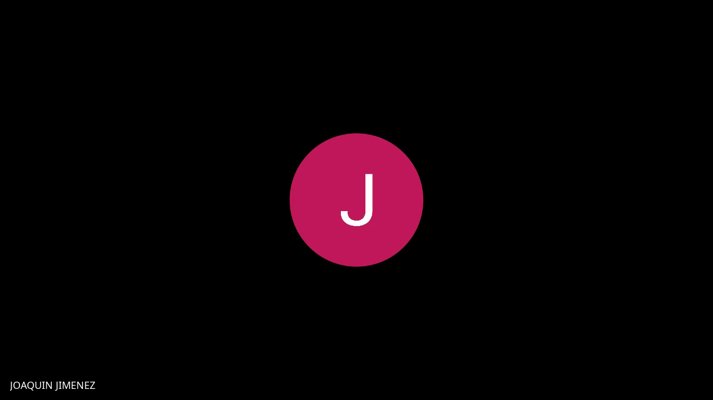
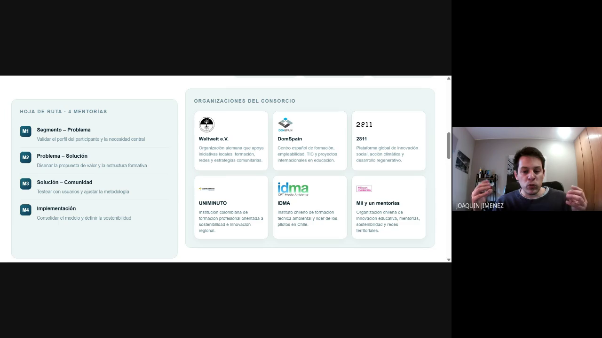
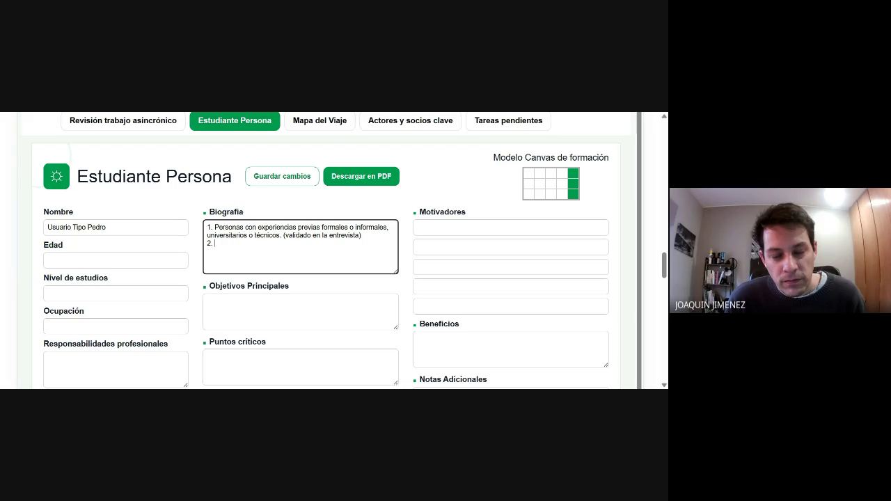
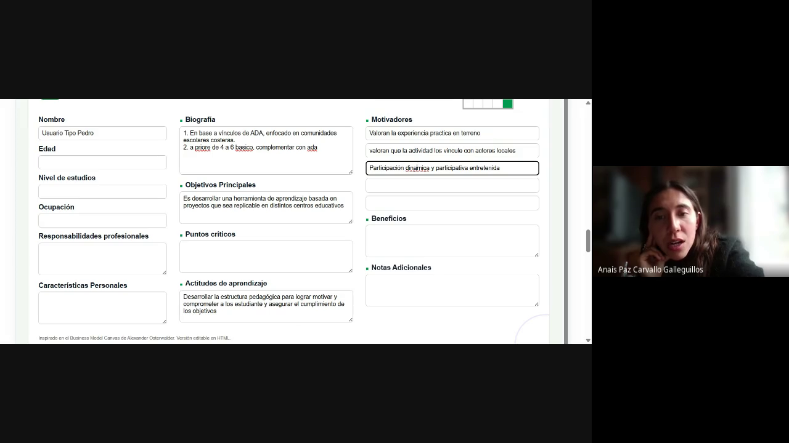
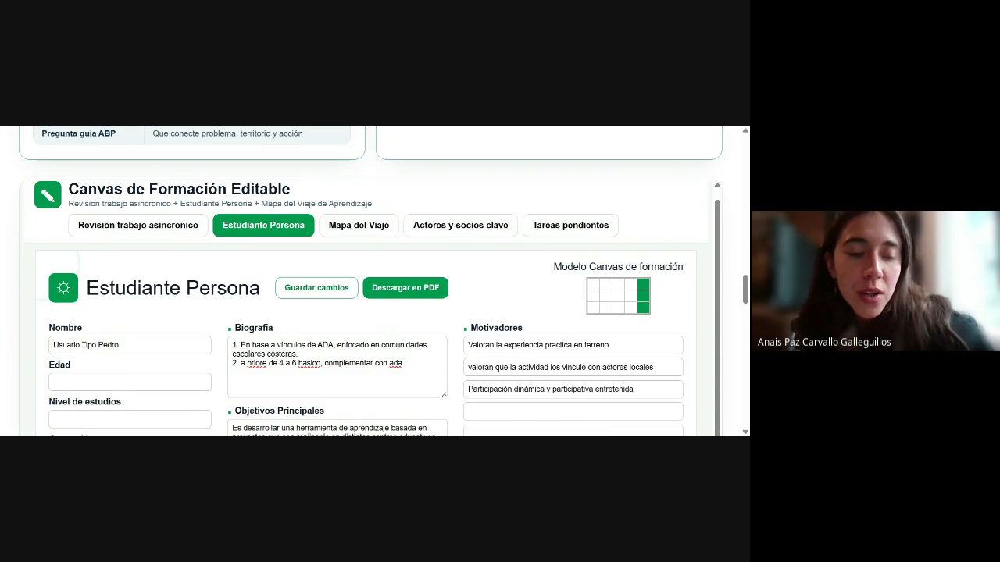
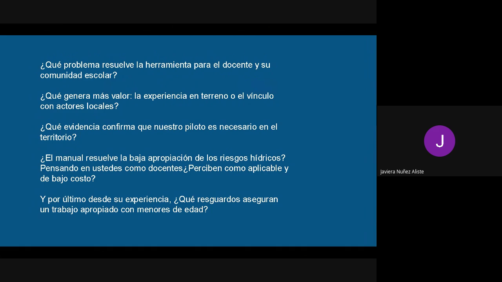
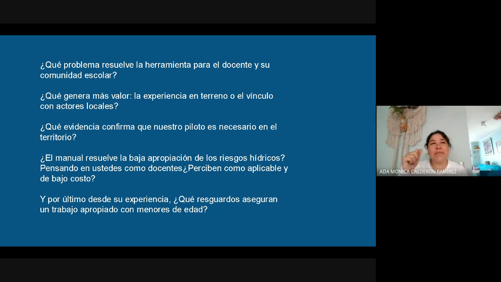
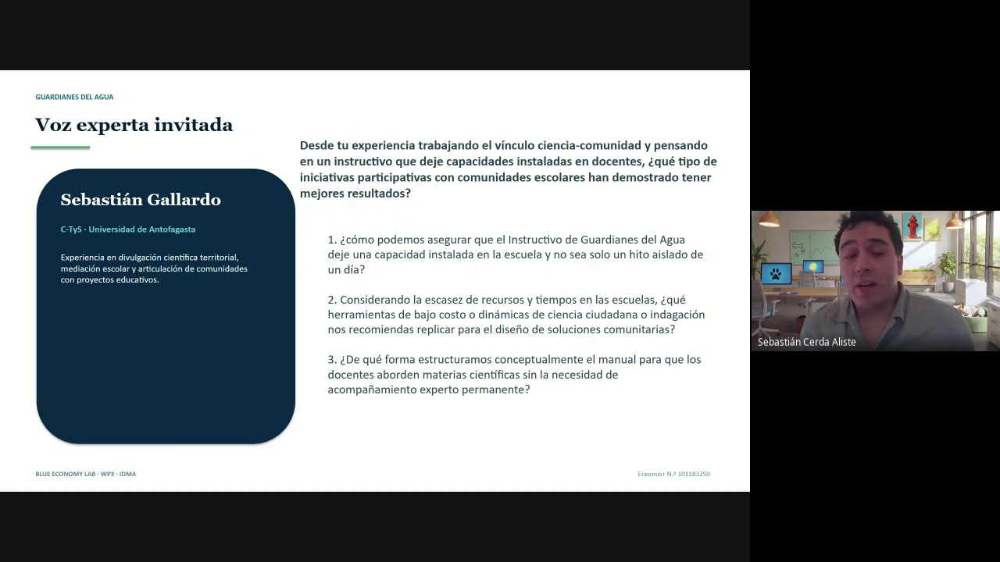
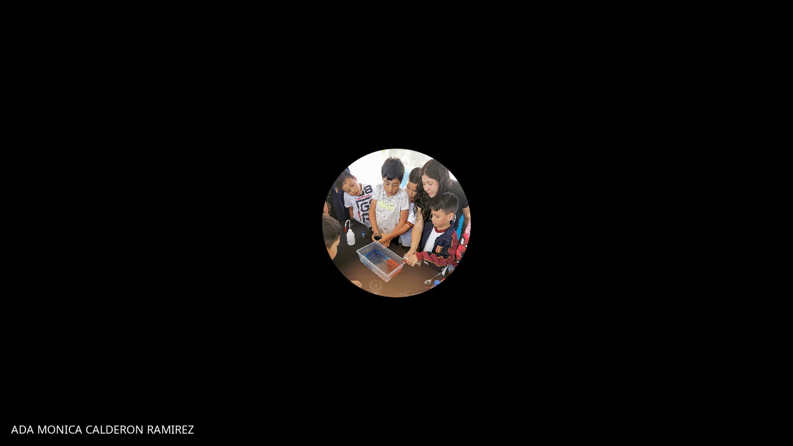
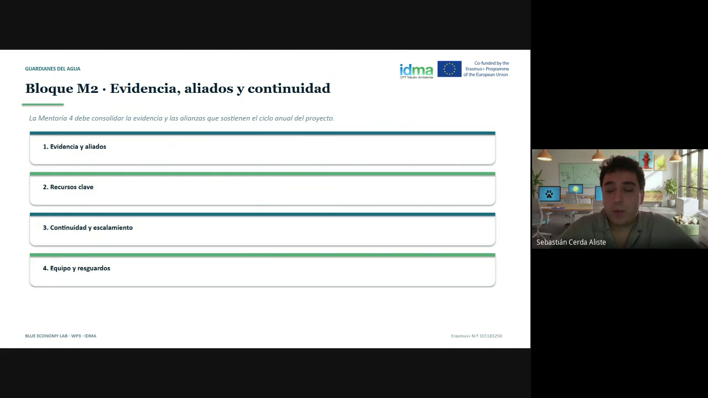
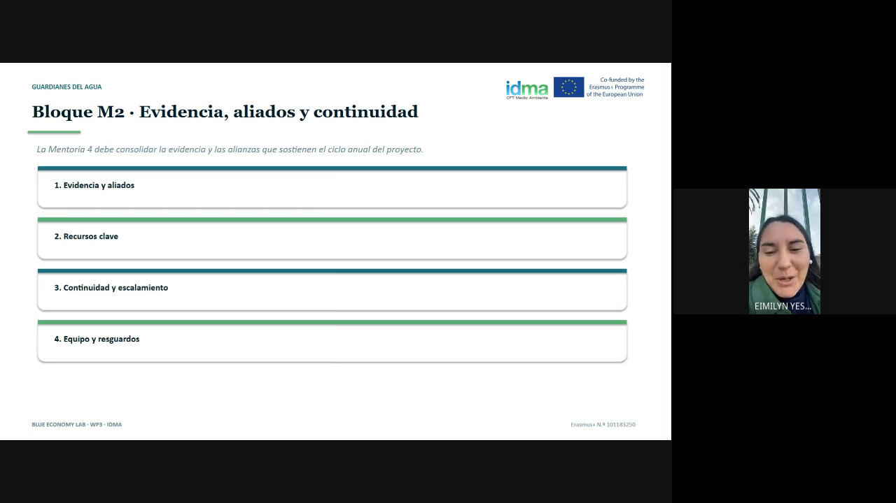
14 fotogramas extraídos de las grabaciones de mentoría (5 por sesión, en distintos momentos).
En el marco del proyecto de Economía Azul, UNIMINUTO está implementando su primera electiva institucional en Economía Azul, diseñada como una oferta académica transversal dirigida a estudiantes de todas las carreras. La iniciativa responde a la necesidad de una formación interdisciplinaria que conecte distintas áreas del saber con el uso sostenible de los recursos marinos y costeros y con oportunidades de desarrollo económico sostenible.
El piloto se ejecuta desde la Escuela de Ciencias Naturales y Ambientales (ECNA), Gerencia de Desarrollo Rural, en Bogotá, con Jessica Morales Perdomo, Directora de la ECNA, como contraparte del consorcio Blue Economy Lab. UNIMINUTO reportó su recorrido bajo el foco común acordado por el consorcio: Segmento–Problema, Problema–Solución, Solución–Testeo e Implementación.
La electiva busca fortalecer el conocimiento sobre el uso sostenible de los recursos marinos y costeros y sentar las bases para la formación de profesionales con enfoque innovador y compromiso con el desarrollo sostenible del territorio. Por tratarse de la primera electiva institucional en este ámbito, deja instalada una oferta formativa transversal y permanente en la institución, e incorporada al cross-assessment del consorcio (Tarea T3.3). El documento o evidencia detallada, los testimonios y el material visual están pendientes de envío por UNIMINUTO; no constan aún resultados, cifras ni número de participantes.
| Contexto y propósito | Existe la necesidad de una formación transversal en economía azul para el estudiantado de todas las carreras de UNIMINUTO; el piloto responde implementando la primera electiva institucional en Economía Azul como oferta académica abierta a la institución. |
|---|---|
| Metodología de co-diseño | La electiva se concibe como una oferta académica transversal e interdisciplinaria que conecta distintas áreas del saber, ejecutada desde la Escuela de Ciencias Naturales y Ambientales (ECNA); reportada al consorcio bajo el foco común Segmento–Problema, Problema–Solución, Solución–Testeo e Implementación. |
| Impacto y aprendizajes | Busca fortalecer el conocimiento sobre el uso sostenible de los recursos marinos y costeros y sentar las bases para formar profesionales con enfoque innovador y compromiso con el desarrollo sostenible del territorio; no constan aún resultados, cifras ni número de participantes (pendientes). |
| Sostenibilidad futura | Al ser la primera electiva institucional en Economía Azul, deja instalada una oferta formativa transversal y permanente dentro de la institución; el piloto quedó incorporado al cross-assessment del consorcio (Tarea T3.3). |
Testimonios pendientes de envío.
Fotos: Pendiente pendiente — UNIMINUTO aún no ha enviado material visual de este piloto.
Consentimientos de imagen: Pendiente pendiente — sin consentimientos de imagen asociados; por enviar.
El piloto «Hackathon Blue Economy» de UNIMINUTO (Corporación Universitaria Minuto de Dios, Colombia) se ejecuta desde la Escuela de Ciencias Naturales y Ambientales (ECNA), Gerencia de Desarrollo Rural, en Bogotá, con Jessica Morales Perdomo, Directora ECNA, como contraparte del consorcio Blue Economy Lab.
Como parte del fortalecimiento de competencias prácticas, se desarrollará una hackathon en Economía Azul dirigida a estudiantes, docentes y/o colaboradores de UNIMINUTO interesados(as) en proponer soluciones innovadoras a los principales desafíos del sector. El espacio se estructura bajo el foco común del consorcio —Segmento–Problema; Problema–Solución; Solución–Testeo; Implementación— y fomenta el trabajo colaborativo, la creatividad y el pensamiento estratégico.
Se busca generar propuestas orientadas al aprovechamiento sostenible de los recursos marinos, la generación de empleo y la innovación en los territorios costeros, con potencial de implementación real, promoviendo la conexión entre academia y entorno. El piloto fue incorporado al cross-assessment del consorcio (Tarea T3.3). Los testimonios, el material visual y el documento de evidencia están pendientes de envío por UNIMINUTO; no constan aún resultados, cifras ni número de participantes.
| Contexto y propósito | Aborda el fortalecimiento de competencias prácticas en Economía Azul dentro de UNIMINUTO, abriendo un espacio para que su comunidad proponga soluciones innovadoras a los principales desafíos del sector. |
|---|---|
| Metodología de co-diseño | Se desarrolla en formato de hackathon, bajo el foco común del consorcio (Segmento–Problema; Problema–Solución; Solución–Testeo; Implementación), basado en trabajo colaborativo, creatividad y pensamiento estratégico; el detalle por fase y la evidencia están pendientes de envío por UNIMINUTO. |
| Impacto y aprendizajes | Busca que estudiantes, docentes y/o colaboradores diseñen iniciativas que contribuyan al aprovechamiento sostenible de los recursos marinos, la generación de empleo y la innovación en los territorios costeros, con potencial de implementación real. Aún no constan resultados ni cifras. |
| Sostenibilidad futura | Promueve la conexión entre academia y entorno, incentivando propuestas con potencial de implementación real más allá del evento. El piloto fue incorporado al cross-assessment del consorcio (Tarea T3.3) para enriquecerse con la mirada experta de las otras instituciones. |
Testimonios pendientes de envío.
Fotos: Pendiente pendiente — UNIMINUTO aún no ha enviado material visual de este piloto.
Consentimientos de imagen: Pendiente pendiente — sin consentimientos de imagen asociados; por enviar.
Resumen del avance del paquete por piloto. Las fichas y testimonios están listos; el material visual y los consentimientos firmados son el principal pendiente para la difusión pública.
| Piloto | Ficha de síntesis | Testimonios | Fotos | Consentimientos |
|---|---|---|---|---|
| Mes Azul IDMA | Sí (421 palabras) | 5 | Disponible (15) | Parcial |
| Diplomado en Economía Azul y Sostenibilidad Costera | Sí (396 palabras) | 5 | Disponible (14) | Pendiente |
| Guardianes del Agua | Sí (410 palabras) | 5 | Disponible (14) | Pendiente |
| Electiva en Economía Azul | Sí (206 palabras) | 0 | Pendiente | Pendiente |
| Hackathon Blue Economy | Sí (171 palabras) | 0 | Pendiente | Pendiente |